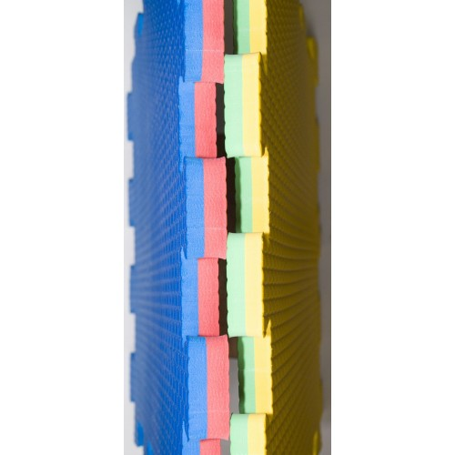

Спортматы

Цвет: зелёный, красный, синий, голубой, жёлтый, оранжевый, фиолетовый, красный и т.д.
Производство: Турция
Материал: EVA
Размеры: по заказу (лист 1 м х 1 м) , толщиной в 6,8,10,12,26 мм
Твердость: 15 ШОР, 20 ШОР и более
С помощью будо-матов можно быстро и легко оборудовать место для безопасного профессионального занятия спортом или активного отдыха. Они отлично подойдут для спортивных комплексов, фитнес-клубов, школьных спортзалов или даже для дома.
Защитное покрытие является одним из обязательных элементов для проведения разного рода спортивных тренировок и состязаний. А его исполнение в виде модульных блоков позволяет не тратить много времени на укладку и поддержание надлежащего вида. Наш ассортимент включает маты различных размеров и толщин, что позволяет оптимально подобрать покрытие под конкретное помещение.
Основные характеристики:
- применение будо-матов позволяет минимизировать случаи травматизма;
- гипоаллергенный
- быстро и легко укладывается на твёрдую и ровную поверхность пола и так же легко разбирается, что позволяет получить ровный пол без клея и с герметичными швами;
- не собирает пыль, легко отмывается - покрытие стойко к бытовой химии и влаге.